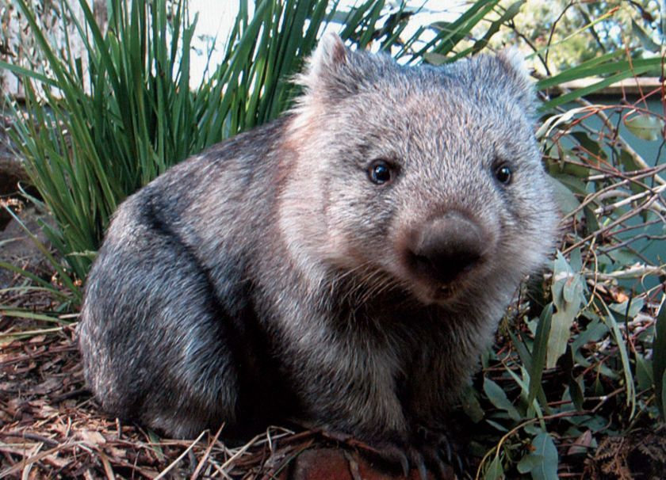

Northern Hairy Nosed Wombats are one of the only 3 species of wombat in the world
They are the largest of the 3 the wombats can weigh up to 30k and reach more than a metre in length
Furthermore Northern Hairy Nosed Wombats are the largest herbivorous burrowing mammal in the world
They have longer and more pointed ears, softer fur and a flatter nose with fine whiskers
Unfortunately they are one of the most endangered species of mammal in Australia